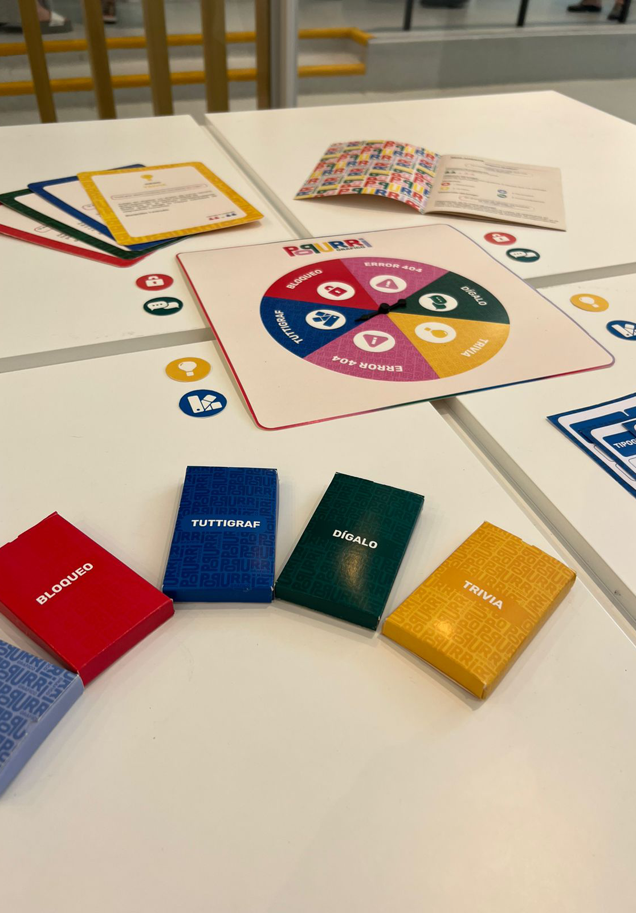

QUÍENES SOMOS?
La inventiva, la creatividad y la habilidad de resolver problemas son algunas de las tantas cosas que nos caracterizan a los diseñadores, así como también el importante rol social que tenemos en la sociedad. Este equipo se conforma por dos diseñadoras gráficas que buscan dejar su aporte con la intención de generar un impacto positivo en aquellas áreas y personas que lo necesiten.

NOELIA BORCHES
Diseñadora gráfica

VICTORIA BARA
Diseñadora gráfica

NUESTRA HISTORIA
Popurrí gráfico surge gracias a un trabajo académico, sin embargo, durante su abordaje, se tomó conciencia sobre los recursos lúdicos y su impacto positivo en el proceso de aprendizaje ya que, a pesar de la gran cantidad de cambios tecnológicos, sociales y culturales a los que estamos expuestos, todavía la educación tradicional no ha logrado seguirle el paso.
Este juego didáctico fue el incentivo para para atender estos cambios y apostar por una propuesta educomunicacional e inclinada hacia la forma de aprendizaje no convencional.